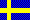

Det europeiska CW-förbundet
The European CW Association
 Tyska (orginalsidorna, finns hos AGCW-DL)
Tyska (orginalsidorna, finns hos AGCW-DL)
 Engelska (finns hos AGCW-DL)
Engelska (finns hos AGCW-DL)
 Esperanto (översättningen saknas)
Esperanto (översättningen saknas)
 Franska (översättningen saknas)
Franska (översättningen saknas)
 Italienska (översättningen saknas)
Italienska (översättningen saknas)
 Katalanska (Finns hos EACW)
Katalanska (Finns hos EACW)
|
EuCW är ett förbund av europeiska telegrafiklubbar. Organisationens mål är att skapa ett förbund av oberoende europeiska amatörradio telegrafiklubbar. Genom arbetet i förbundet kan medlemsklubbarna utbyta idéer och information, organisera olika aktiviteter med ömsesidigt utbyte, och samarbeta för amatörradiotelegrafins bästa. Medlemmar i EuCW är inte enskilda personer utan europeiska telegrafiklubbar, dvs. rena CW-klubbar och också QRP-klubbar som på ett naturligt sätt ofta värdesätter CW. Också icke-europeiska organisation kan vara associerade med EuCW. Varje medlemsförening utser en representant som kallas ECM (EuCW Communications Manager) för att hantera kommunikationen med EuCW. Dessa web-sidor underhålls av ECM för AGCW (Martin, ik2rmz) med stöd av Tom (hb9dod at agcw.de, som koordinerar ON och PA) och Micha (df4wx).
|
AGCW är en av de största tyska telegrafiklubbarna. Huvudsyftet med klubben är att uppmuntra och stödja morse inom amatörradio. Den grundades 1971 och har ca 2000 medlemmar, främst i tyskland men också i andra länder. Vi [AGCW, Översättarens anmärkning]) välkomnar nybörjare och är ivriga att visa dem det äldsta och troligen vackraste moden inom amatörradio. Vi hjälper dem över passivitetströskeln (och att klara morseprovet) som hindrar andra att vara med. AGCW organiserar CW Contents och ger ut CW-diplom för att uppmuntra CW på banden. Vi distribuerar en tryckt tidning "AGCW-Info" (på tyska) två gånger om året med information om vår klubb, testresultat, och andra intressanta bidrag. Vi sänder också ut QTC via radio på CW och paketradio, på nyhetsgruppen de.comm.ham och på denna hemsida.
|
|
EuCWs officiella språk är Engelska,
och därför är utgångspunkten att all information först bara finns
tillgänglig på Engelska.
[Här finns, i den tyska varianten,
en ursäkt om att inte allt är översatt till tyska men den är ointressant
för den svenska publiken. Översättarens anmärkning.]
Senast uppdaterad: tryck här.
73 de IK2RMZ
AGCW 897
|
 |